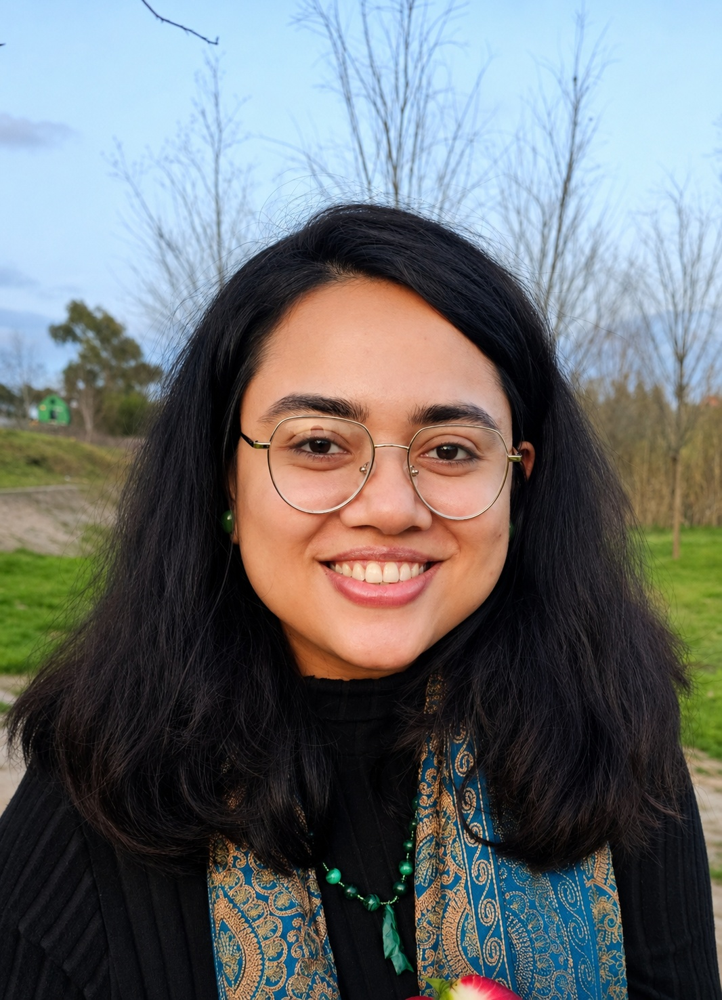

Farah Noor Chowdhury
Seven years turning humanitarian and development data into evidence that donors, managers and field teams can act on.

MEALPower BI · TableauPython · SQLData meets human impact.
I’m a Monitoring, Evaluation, Accountability and Learning specialist who manages the full M&E data cycle across humanitarian, development and WASH programmes: indicator tracking, data quality assessment, survey analysis, dashboards and donor reporting.
My work has covered 20 programmes, 49 field sites and 2,000+ beneficiaries, always with a Results-Based Management foundation. I’m now pursuing an MSc in Management Engineering in Rome, focused on AI applications in data and management systems.
I also volunteer with the UN Resident Coordinator’s Office in North Macedonia, building dashboards and visual products for national indicators.
Where I’ve worked.
MIS Manager
- Build and maintain MIS reports, interactive dashboards and performance monitoring systems in Power BI, Excel, SQL and Tableau.
- Design automated reporting that cuts manual workload, and prepare monthly, quarterly and annual KPI reports for management.
Volunteer Graphic Designer & Data Visualization Developer
- Built a multilingual results dashboard for the National Youth Strategy 2023–2027.
- Turned complex indicator data into clear, accessible visual reporting products.
WASH Monitoring & Reporting Officer
- Covered 20 programmes across 43 field sites, analysing 400+ datasets and monitoring records.
- Maintained M&E tools and indicator tracking, ran data quality checks and strengthened Accountability to Affected Populations.
Monitoring & Evaluation Officer
- Led M&E across 20 programmes, tracking 21 indicators with SPSS, R and Excel over 800+ datasets.
- Built 40 Power BI dashboards and 155 reports: 66% better data quality and completeness, 12% less reporting time.
- Trained 120 field staff and supported 67 stakeholders and partners.
Data Analyst Intern
- Cleaned and analysed datasets with SQL and Python for business intelligence reporting.
What I bring.
MEL
Indicator tracking, Results-Based Management, Theory of Change, logframes.
Analysis & Visualization
Dashboard development and data storytelling.
Programming & Databases
Python, SQL and machine learning fundamentals.
Statistics
Exploratory data analysis and predictive modelling.
Data Collection
Mobile survey tools and survey design.
Donor Engagement
Donor and technical reporting, capacity building, cross-functional coordination.
Results in numbers.
Data quality uplift
Better data quality and completeness across 20 development programmes at CaST Network.
WASH monitoring
Datasets cleaned and analysed across 43 field sites for ACF in Cox’s Bazar.
Field staff trained
Hands-on training in data collection, monitoring tools and reporting procedures.
Faster reporting
Reduction in reporting time through standardised tools and dashboards.
Projects & live demos.
Youth Strategy Dashboard
Multilingual results dashboard for North Macedonia’s National Youth Strategy 2023–2027, built for the UN RCO.
View dashboard →Xpenso
Personal finance and expense management web app.
Open app →Daily Expense Tracker
Browser-based data tool for logging and reviewing daily spending.
Open tool →Location Finder
Interactive map-based location guide built with HTML, CSS, JavaScript, jQuery, PHP and Apache.
Library Management System
Online MIS for cataloguing and knowledge management.
Learning, always.
MSc, Management Engineering
Università di Tor Vergata, Rome. AI in manufacturing and management, data migration, database administration.
BSc, Computer Science & Engineering
International Islamic University Chittagong. Machine learning, data mining, algorithms, databases.
Certifications
IBM Data Science Professional Certificate (2023)
Data Science Math Skills, Duke (2023)
Planning for M&E, Philanthropy University (2023)